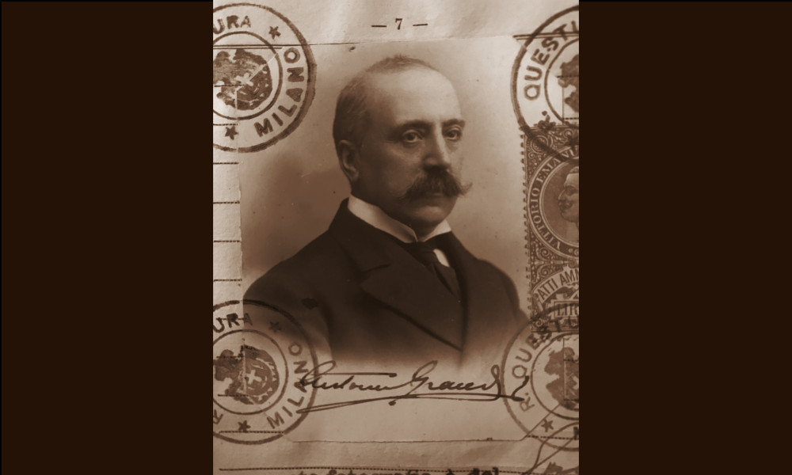

Grandi

- Dati biografici
- Albero familiare
- Luoghi
- Relazioni
- Opere trattate
Antonio Grandi (1857-1923) e il fratello maggiore Carlo (1842-1914) furono i titolari di una delle più importanti imprese antiquariali milanesi della seconda metà dell’Ottocento, attiva fino agli anni Venti del Novecento.
La sede storica della “Ditta Antonio Grandi” in Corso Venezia (all’epoca denominato Corso di Porta Orientale) fu aperta fin dal 1810 da Antonio Pini che si trasferì da Bellagio a Milano per vendere vetri e cornici, aiutato dal nipote Antonio Grandi senior (1810-1877). Alla morte di quest’ultimo, il negozio venne ereditato da due dei suoi figli: Carlo e Antonio, omonimo del padre. Forse in ragione della personale passione del giovane Antonio, i fratelli cominciarono a vendere anche stampe e poi dipinti, disegni e oggetti antichi e contemporanei.
Nel corso della loro lunga attività, entrarono in contatto con le figure più rilevanti del mercato e del collezionismo milanese, italiano ed europeo. In particolare, lavorarono in società in diverse occasioni con Giuseppe Baslini , il famoso mercante responsabile della formazione di gran parte della raccolta di Gian Giacomo Poldi Pezzoli. Baslini aveva infatti sposato la sorella di Carlo e Antonio Grandi, Marianna, e risulta che indicasse di frequente la sede dei cognati, Corso Venezia 12, come proprio indirizzo.
Anche con Luca Beltrami, architetto responsabile del restauro del Castello Sforzesco (1891-1905) e personalità centrale per le politiche artistiche di Milano a cavallo tra Otto e Novecento, gli antiquari intrattennero una relazione personale e professionale molto stretta. Tra le tante occasioni di collaborazione, tra il 1905 e il 1906, Antonio Grandi curò con lui e il restauratore Luigi Cavenaghi il nuovo allestimento della Pinacoteca Ambrosiana per la sezione delle stampe. I Grandi furono infatti appassionati collezionisti e editori di stampe, come dimostra la donazione di oltre duecento rami alla Civica Raccolta Bertarelli, voluta da Filippo Grandi nel 1957 per celebrare i cento anni dalla nascita del padre.
Inserito nei circuiti artistici più rilevanti della città, dal 1889 per circa i vent’anni successivi, Antonio Grandi fu anche segretario del Consiglio Direttivo della Società per le Belle Arti ed Esposizione Permanente con un ruolo sia organizzativo, che scientifico nella veste di curatore di mostre, soprattutto di grafica.
L’estensione e la portata delle relazioni della Ditta Grandi nella Milano di secondo Otto e primo Novecento si desume bene anche dalle carte dell’archivio donato dagli eredi al FAI. Sono documentati rapporti con restauratori come Giuseppe Steffanoni e il già citato Luigi Cavenaghi e con numerosissimi colleghi italiani e stranieri come Pietro Accorsi, Dino Barozzi, Giuseppe Colnaghi, Michelangelo Guggenheim, Gutekunst e Giuseppe Sangiorgi , solo per citarne alcuni.
Tra i loro acquirenti sono ricordati Fausto e Giuseppe Bagatti Valsecchi, Bernard Berenson, Antonio Borgogna, i coniugi Jacquemart-André, Aldo Noseda, oltre al Ministero della Pubblica Istruzione, l’Accademia di Brera, il Museo Poldi Pezzoli e le collezioni municipali di Milano.
Altri antiquari:
Clienti:
- Aldo Noseda
- Antonio Borgogna
Collaboratori:
- Giuseppe Steffanoni (restauratore)
- Luca Beltrami (architetto)
- Luigi Cavenaghi (restauratore)
Vedi le opere transitate presso l'antiquario presenti nel catalogo della Fondazione Zeri